AI Agents Need an Exception Budget
How to connect autonomous throughput to recovery capacity: a quantitative architecture for admission control, leased authority, verified outcomes and human intervention.
An enterprise should expand an AI agent's authority only as fast as it can resolve the exceptions that authority creates.
Consider a hypothetical CRM operation processing 10,000 business actions a day. If 1% require human investigation after automated recovery, and each investigation takes 12 minutes, the agent creates 20 hours of recovery work every day. Four specialists with four available hours each can provide 16 hours. The operation accumulates unfinished work even though 99% of actions avoid human investigation.
This is a capacity mismatch that a model-accuracy dashboard can miss.
The operating response is an exception budget: a bounded allocation of recovery capacity, unresolved exposure and intervention time, enforced before additional consequential actions enter the system. It complements authorization and reliability controls. It never permits a prohibited action because spare recovery capacity happens to exist.
The architecture below develops three linked decisions: define business completion precisely; admit only the workload the recovery system can support; require evidence before increasing autonomy. Its ten architecture plates describe the enforcement mechanisms. Two statistical exhibits show how the admission limit changes under uncertainty and queueing pressure.
Evidence note: All workload figures, staffing levels, service times, cost examples and resulting estimates in this newsletter are explicitly hypothetical. They illustrate a reproducible design method, not measured customer outcomes or universal benchmarks. The architecture is a proposed reference design. Source-backed mechanisms are linked where used.
1. Put the recovery constraint into the write path
A dashboard can identify overload after it has occurred. An admission controller can reduce how much additional exposure the system creates.
The distinction changes the architecture. The agent proposes an exact business intent. An authorization service determines whether that intent is permitted. A separate allocator determines whether the relevant recovery pool has enough remaining capacity to admit it. The domain boundary enforces the resulting command, and an independent verifier establishes what actually happened.
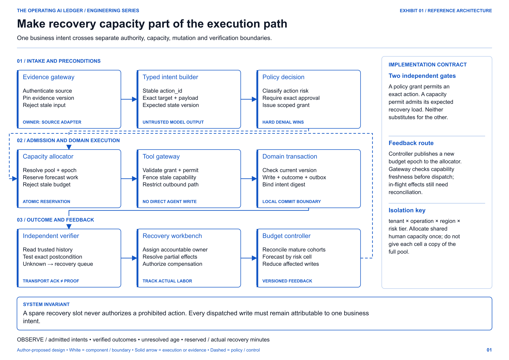
The unit of control should be narrow enough to isolate harm: tenant, operation, region and risk tier. A routing backlog may justify restricting new case reassignments while allowing evidence retrieval and draft preparation to continue. A compromised identity issuer can justify a much wider stop.
There is one important accounting constraint: the same specialist cannot be allocated in full to every cell. If five workflows share a recovery team, their combined reservations must fit the same staffing pool. Otherwise, each workflow can appear within budget while the organisation is collectively overloaded.
This is related to the operational discipline of an SRE error-budget policy, which can constrain changes when reliability objectives are missed. The quantity being controlled here is different. A reliability error budget measures tolerated SLO failure; an exception budget limits recovery demand and unresolved exposure. Neither replaces security policy. Google SRE: example error-budget policy.
2. Count completed business actions, including the uncertain ones
Suppose an agent reassigns an escalated CRM case. The database commits the change, but the response to the agent is lost. The customer has also supplied new information that makes the originally proposed reassurance email inaccurate.
Two decisions are now necessary. Resolve whether the reassignment occurred under the original action identity. Reassess the customer message against current evidence and its own approval requirements.
A generic retry of the entire workflow can duplicate an effect or send an obsolete promise. A generic "failed" classification is also wrong: the routing change may already exist.
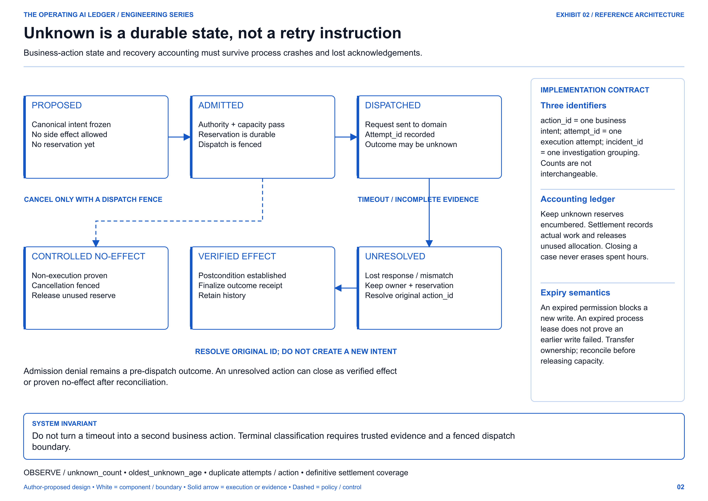
At the reporting deadline, each admitted action belongs to one of three outcome classes:
| Outcome | Required evidence | Accounting consequence |
|---|---|---|
| Verified completion | An authoritative observation establishes the approved postcondition | Close outstanding recovery liability; retain any actual recovery spend |
| Controlled noncompletion | The system proves the action did not execute, with dispatch fenced | Release unused allocation; record noncompletion rather than delivered value |
| Unresolved | Available evidence cannot establish the relevant outcome | Keep the action visible, owned and encumbered until reconciliation |
For a mature cohort, the conservation rule is:
N_admitted = N_verified + N_controlled_noncompletion + N_unresolved
An action that misses its completion deadline remains a deadline miss even if it later succeeds. Preserve the original deadline verdict and the eventual outcome as separate fields. Otherwise, late reconciliation silently improves historical performance without improving the experience the customer received.
AWS's idempotency guidance explains why caller intent and a supported receiver contract matter when retrying after an ambiguous response. A locally generated key alone cannot make an arbitrary downstream effect safe to repeat. AWS Builders' Library: making retries safe.
The denominator is an architectural decision
A source event, an execution attempt, a business action and an investigation are different objects. One action can generate five attempts and ten log events. One incident can explain failures affecting 200 actions.
Count business outcomes at action grain. Measure human effort at work-entry grain. Use an explicit incident-to-action bridge to relate them. Aggregating after an uncontrolled many-to-many join can inflate both failure counts and labor estimates.
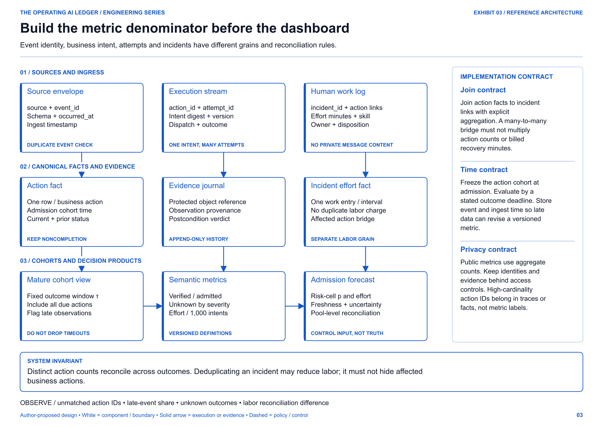
An action cohort is fixed by admission time. Define an observation window, τ, and evaluate only cohorts old enough to have completed that window. Unknown outcomes stay in the denominator. An event's occurrence time and ingestion time should both be available so delayed evidence can be identified and reconciled.
Source-event deduplication belongs earlier in the pipeline. For example, CloudEvents defines event identity through the combination of source and ID. That identifies a repeated event; it does not prove a business effect happened once. CloudEvents specification, v1.0.2.
3. Calculate the workload the recovery system can absorb
For risk cell i, let:
- Nᵢ be admitted business actions per day.
- pᵢ be the probability that an action needs human investigation after supported automated recovery.
- mᵢ be mean human handling minutes for such an action under the stated effort-allocation rule.
Expected recovery demand is:
D_hours/day = Σᵢ (Nᵢ × pᵢ × mᵢ) / 60
The simple worked example assumes one investigation per exceptional action. Where incidents cover multiple actions, estimate labor at incident level or allocate it consistently across affected actions. Do not charge the same investigation in both calculations.
At 10,000 actions per day, a 1% human-exception probability and 12 minutes of handling time:
Expected exceptions = 10,000 × 0.01 = 100/day
Recovery demand = 100 × 12 / 60 = 20 hours/day
Available capacity = 4 reviewers × 4 hours = 16 hours/day
Fluid case capacity = 16 × 60 / 12 = 80 cases/day
Daily backlog change = 100 − 80 = +20 cases/day
With constant daily arrivals, constant service capacity and an initially empty queue, the fluid backlog reaches 100 cases after five working days. This is deterministic planning arithmetic, not a forecast of the exact path of a random queue.
| Human-exception probability | Cases arriving/day | Recovery demand/day | Net backlog growth/day | Backlog after five working days, starting empty |
|---|---|---|---|---|
| 0.2% | 20 | 4 hours | 0 | 0 |
| 1.0% | 100 | 20 hours | 20 | 100 |
| 2.0% | 200 | 40 hours | 120 | 600 |
The useful sensitivity is how quickly a small change in the exception probability consumes the available service margin. Doubling the workload is equivalent, in this expected-demand calculation, to doubling the exception probability or doubling mean recovery effort. The operational causes and remedies are different, so all three inputs must remain visible.
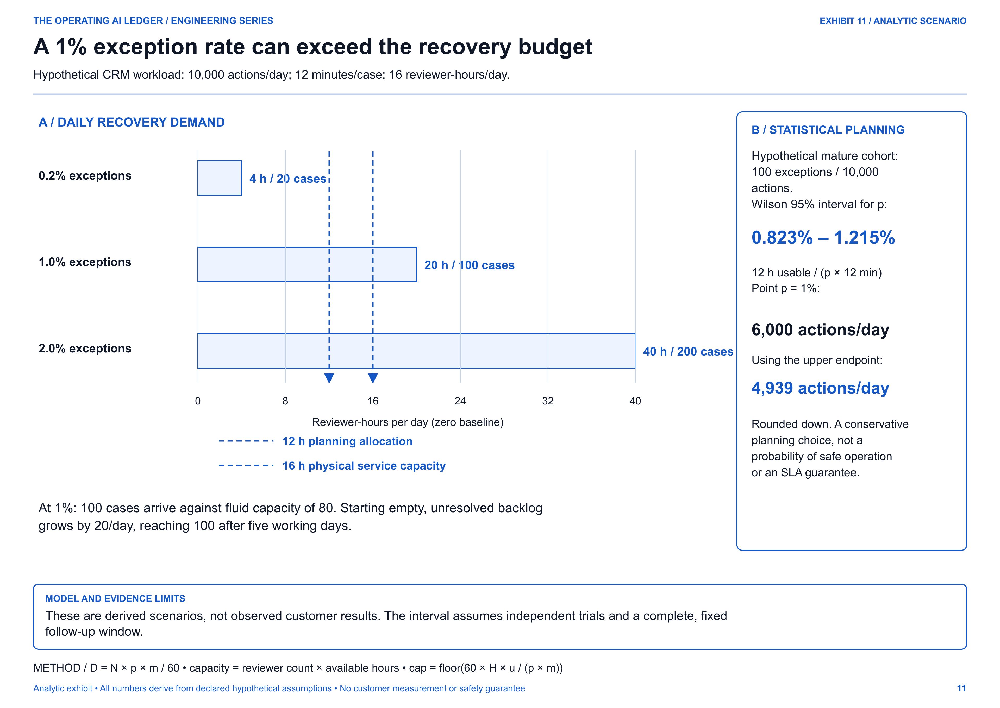
Reserve headroom, then account for estimation uncertainty
Suppose the operating owner allocates 75% of the 16 available hours to planned exception work. The remaining four hours provide a reserve. This 25% reserve is an illustrative management choice, not an industry rule.
The planned allocation is 12 hours, or 60 investigations. With p = 1%:
N_cap = floor(60 × H × u / (p × m))
= floor(60 × 16 × 0.75 / (0.01 × 12))
= 6,000 business actions/day
A point estimate is not a known constant. To demonstrate the consequence, suppose a hypothetical, completely observed cohort contains 100 exceptions among 10,000 actions. Its estimated exception probability is 1%. A two-sided 95% Wilson interval is approximately 0.823% to 1.215%. NIST: confidence intervals for a proportion.
Using that interval's upper endpoint as a conservative planning input lowers the cap to 4,939 actions per day, rounded down. That is about 17.7% below the point-estimate cap.
This does not mean 4,939 actions are "95% safe." The interval concerns the exception probability under its sampling assumptions. It does not bound severity, recovery-time variation, future distribution shifts or the probability that daily demand exceeds staffing capacity.
The binomial calculation also assumes independent, comparable trials with complete follow-up. A shared outage can generate correlated exceptions across hundreds of actions. For clustered production data, estimate at the incident or suitable time-block level, stratify by relevant risk cells, and use a model appropriate to that dependence. Repeatedly inspecting the same cohort also requires a deliberate monitoring method; repeated ordinary confidence intervals are not a sequential guarantee.
The next improvement to this model would use the joint distribution of exception arrivals and handling effort, actual staffing calendars and a declared service objective. The current arithmetic establishes why an unconstrained throughput target is already infeasible.
4. Treat queueing delay as a separate constraint
Average recovery demand can fit inside average staffing capacity while urgent work still waits too long.
To isolate this mechanism, consider an ideal M/M/4 queue: four continuously available reviewers; Poisson case arrivals; independent exponential service times averaging 12 minutes; first-in, first-out service; no abandonment. Each reviewer serves five cases an hour, so total service capacity is 20 cases an hour.
Utilization is:
ρ = λ / (c × μ)
λ = arriving cases/hour
c = 4 reviewers
μ = 5 cases/hour/reviewer
For ρ < 1, the Erlang-C delay probability C gives:
E[Wq] = C / (cμ − λ)
P(Wq > t) = C × exp[−(cμ − λ)t]
Time is measured in hours in these equations. The exhibit converts the results to minutes. The multi-server waiting-time relationship follows the Erlang-C model; the accompanying calculation code implements it directly. Gunther: Erlang Redux, M/M/m queue analysis.
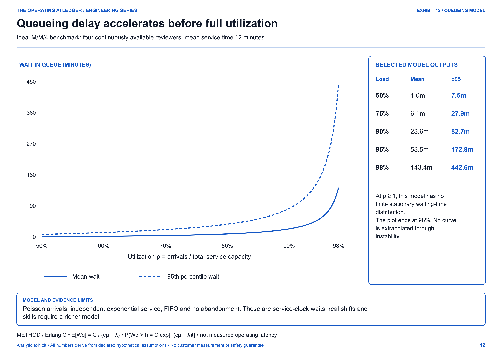
At 75% utilization, the model's mean queue wait is approximately 6.1 minutes. At 90%, it is 23.6 minutes. At 98%, it is 143.4 minutes. The relevant distinction is between handling time and waiting time: the assumed 12-minute mean handling time has not changed.
At or above 100% utilization, this stationary model has no finite steady-state waiting-time distribution. Do not extend its curve through the instability boundary and call the result a forecast.
The model is deliberately simpler than a real recovery team. Four reviewers available for a four-hour daily window are not continuously staffed across the calendar. Overnight arrivals, priority classes, skill mismatch and heavy-tailed investigations need a calendar-aware queue model. The plotted waits are an ideal service-clock benchmark, not a promise about how long a customer will wait.
5. Make the admission limit enforceable under concurrency
Two workers can both read the same remaining budget and independently conclude that their action fits. If each then increments a cached counter, they can overspend the pool.
The admission decision therefore needs atomicity. It can use a conditional update inside a suitable transaction, or bounded sub-allocations with fencing and a conserved parent allocation. An eventually consistent dashboard counter is insufficient.
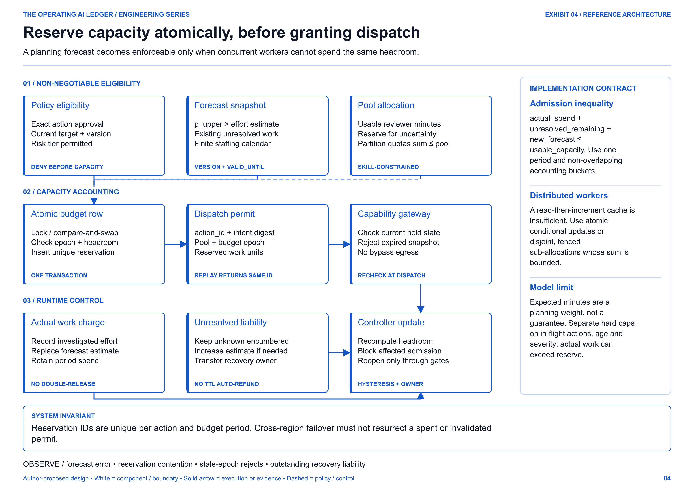
A useful accounting inequality is:
actual_spend
+ remaining_estimate_for_existing_unresolved_work
+ forecast_for_new_admission
≤ usable_capacity_for_the_same_period
The buckets must be non-overlapping. If an investigation has consumed eight minutes and is expected to need four more, charge eight as actual spend and four as remaining liability. Do not charge the full original 12-minute estimate again alongside the eight minutes already spent.
Settlement also needs an explicit evidence-maturity rule. A fast success acknowledgement should not release every provision for a correction that can emerge during the declared follow-up window. Keep that remaining liability in the relevant pool until the settlement policy permits release. The illustrative daily volume cap is a planning ceiling; real-time reservations add an enforcement layer rather than silently removing that ceiling.
The following is transactional pseudocode, not a deployable authorization service:
BEGIN;
-- One authoritative pool/period row; serialize competing allocators.
SELECT * FROM recovery_budget
WHERE pool_id = :pool AND period_id = :period
FOR UPDATE;
-- Application checks under the same lock:
-- 1. snapshot is fresh; capability is not on HOLD
-- 2. an existing action reservation returns its recorded result
-- 3. the same action_id with a different intent digest is rejected
-- 4. spent + outstanding + new_weight <= usable_capacity
INSERT INTO reservation
(pool_id, period_id, action_id, intent_digest, weight, epoch)
VALUES (:pool, :period, :action, :digest, :weight, :epoch);
UPDATE recovery_budget
SET outstanding = outstanding + :weight
WHERE pool_id = :pool AND period_id = :period;
COMMIT;
The implementation also needs uniqueness constraints, an explicit conflict path, failure recovery and consistent behavior across regions. Locking this budget row protects this allocation transaction; it does not make a later CRM write atomic with it. The dispatch protocol must bind the permit to the same intent and deal with cancellation or crash boundaries. Transaction isolation and predicate behavior must be chosen deliberately. PostgreSQL: transaction isolation.
Forecast reservations are planning weights. They are not individual guarantees that an exceptional action will need only its expected fraction of a minute. Keep hard limits on in-flight actions, unresolved age and severity alongside the statistical budget. If actual work exceeds reserved estimates, the remaining capacity can become negative; record that deficit and constrain further admission rather than hiding it.
6. Keep authorization, mutation and verification separate
An exception budget is compatible with short-lived permission leases. It should never create a reason to give the agent a standing role.
Bind the grant to the actor, tenant, target, operation, intent digest, audience, expiry and capability epoch. Enforce it at the gateway and at the domain boundary where feasible. An agent with an alternative direct credential can bypass the intended control path, so egress and credential isolation are part of the design.
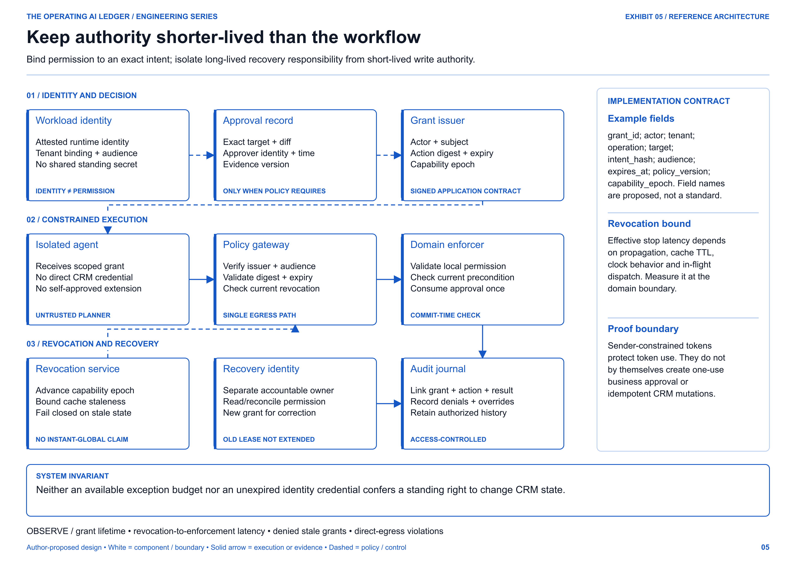
Revocation has a propagation path. Its effective latency depends on caches, clock behavior, regional connectivity and work already dispatched. State a measurable bound rather than promising instant global revocation. Recovery responsibility can persist long after the original write lease expires; the owner receives separately scoped authority to investigate or correct the outcome.
Sender-constrained access tokens can reduce token replay by binding use to a key. They do not automatically establish a one-use business approval, a current target version or a domain idempotency contract. Those remain application responsibilities. RFC 9449: DPoP security considerations.
Define exactly what a transaction guarantees
Within one controlled CRM domain, the application may atomically bind a supported mutation to its idempotency record, approval consumption, recorded result and outgoing event. After a lost response, an authenticated result lookup can resolve the original action identity.
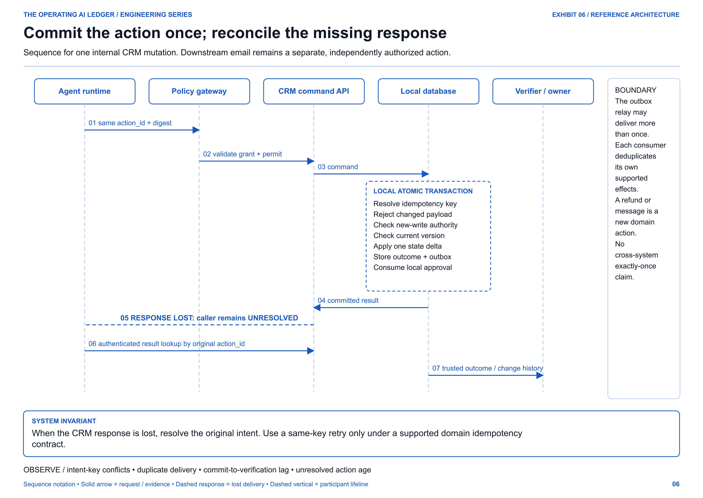
A transactional outbox addresses a local dual-write problem: the business change and the outgoing event can be committed together. The relay can deliver duplicates. Consumers still need appropriate idempotency behavior, and downstream effects remain separate transactions. AWS: transactional outbox pattern.
An email, a refund and a case-routing change should not inherit each other's approval merely because they appear in one plan. Each consequential effect needs a contract suitable to its own risk and reversibility.
Verify the transition, not just the latest value
A current CRM read may show a different owner because another legitimate action occurred after the agent's reassignment. Conversely, it may show the expected owner even though an unrelated actor made the change. Neither observation alone proves the agent's exact action completed correctly.
Use trusted, correlated history where necessary to establish the transition. Check the target, permitted delta, relevant versions and the provenance of the evidence. The agent's own narrative can assist diagnosis, but it cannot certify its own correctness.
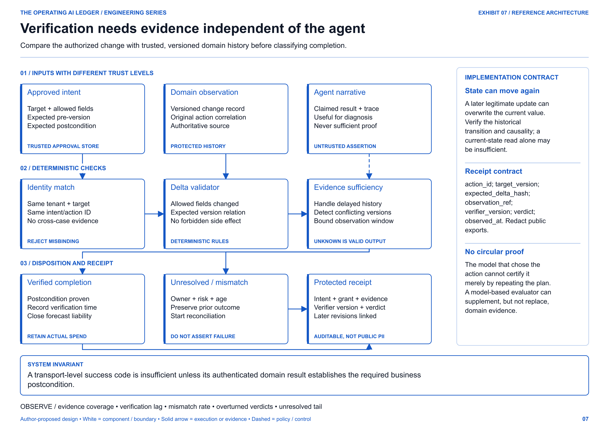
A protected receipt might contain:
{
"action_id": "example-routing-intent-1042",
"intent_digest": "sha256-of-canonical-approved-command",
"expected_pre_version": 41,
"observed_post_version": 42,
"evidence_ref": "protected-domain-history-reference",
"verifier_version": "routing-postcondition-v3",
"verdict": "verified_effect"
}
These are illustrative fields, not real record identifiers or private URLs. A receipt should point to access-controlled evidence, record its verdict and preserve later revisions. A signed receipt attests to its issuer and integrity; its usefulness still depends on the quality and completeness of the evidence behind it.
7. Operate recovery as a service with an accountable owner
The recovery workbench needs more than a generic queue of alerts. It needs incident grouping, skill-based assignment, service calendars, exact corrective proposals and an owner for every unresolved action.
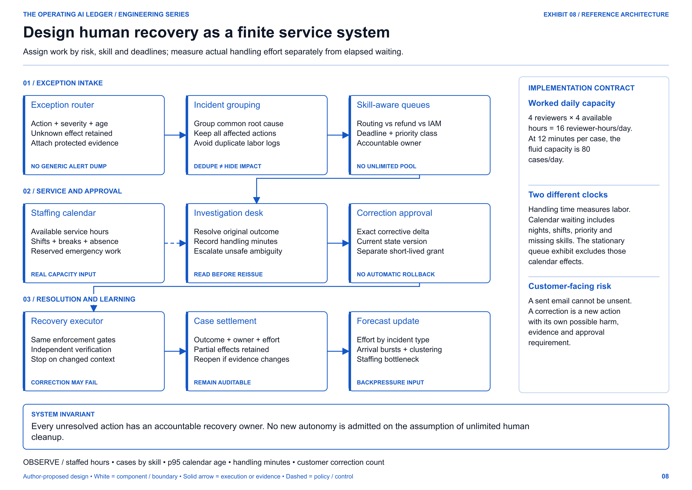
Measure both effort and elapsed age. A case can require only five minutes of investigation yet wait two days for an authorized reviewer. A queue with an acceptable average age can still contain a severe unresolved case. Report the tail by risk tier and show the oldest unresolved action directly.
A correction is another consequential action. It needs current preconditions and its own authority. A compensating action may reduce harm without restoring the original state, and it can itself fail. A customer message cannot be unsent.
The controller should respond to these realities with explicit operating states. NORMAL admits within bounds. CONSTRAINED reduces affected admission. HOLD blocks new affected writes while preserving investigation. RECOVERY demonstrates that the pending effects and service backlog are being resolved before reentry.
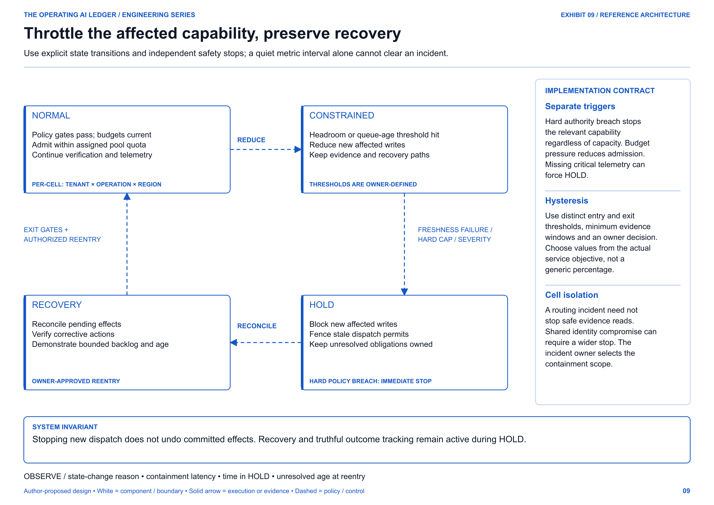
Use different entry and exit conditions so the controller does not oscillate around one threshold. Record the evidence window, policy version and owner decision. A quiet metric interval alone should not clear an authority breach or an unresolved high-severity incident.
8. Give the operating review a metric contract
The primary decision is whether the next unit of autonomous throughput creates acceptable business value with a recoverable residual workload. The review should make the following definitions inspectable.
| Metric | Definition and unit | Interpretation / guardrail |
|---|---|---|
| Verified completion by τ | Admitted actions with proven approved outcomes by their deadline / all admitted actions whose deadlines are due | Include controlled noncompletion and unresolved actions in the denominator |
| Human-exception rate | Distinct mature-cohort actions requiring human investigation / all actions in that cohort | State the follow-up window; unresolved observation gaps are not zeros |
| Recovery intensity | Actual investigation minutes attributable to a cohort × 1,000 / distinct cohort actions | Deduplicate shared incident effort before allocation |
| Unresolved inventory | Distinct outstanding actions, split by severity and operation | Report counts and the oldest case; do not hide severe cases in a weighted average |
| Recovery waiting time | Case assignment/service start minus time it became eligible for recovery | Show calendar-time percentiles and service-calendar coverage |
| Verification lag | Evidence-backed verdict time minus dispatch time | Report unresolved/censored cases alongside completed-case percentiles |
| Budget coverage | Spent minutes plus remaining liabilities divided by usable minutes for the same pool and period | Above 1 means a deficit; do not clamp the displayed value to 100% |
| Forecast calibration | Predicted versus realized investigation incidence and effort by comparable risk cell | Changing case mix can invalidate an aggregate estimate |
| Customer correction rate | Distinct actions requiring a customer-facing correction / mature-cohort actions | State what qualifies as a correction and include delayed corrections |
| Authority breach count | Consequential effects executed outside the approved authority contract | A separate hard-stop signal, not an affordable share of an exception budget |
Targets belong to the operating owner. For a high-risk action, an observed breach can require immediate containment even when its effect on an average rate is tiny. Conversely, ordinary low-risk recovery work can remain acceptable within its service and capacity objectives.
Keep the economics on a comparable basis
In a second illustrative calculation, suppose the pre-automation process uses three minutes per action. At 10,000 actions, that is 500 hours of gross processing capacity. Subtract the worked example's 20 recovery hours and assume another 30 hours for verification and 40 hours for control operations:
Net capacity released = 500 − 20 − 30 − 40 = 410 hours/day
This is a capacity estimate, not cash savings or measured productivity. It excludes several possible costs, including infrastructure, implementation, incident consequences and retraining. The baseline and automated workflow must also deliver comparable outcomes. Faster handling of a narrower or lower-quality service is not equivalent value.
Before calling released time a financial benefit, identify how that time changes staffing cost, revenue, service quality or another measured business result. Do not add nominal labor savings to a revenue estimate that already incorporates the same benefit.
9. Make the next scaling decision an evidence decision
The release gate should test the paths that are easy to omit from a successful demo: competing reservations, stale permissions, duplicate delivery, committed actions with lost responses, unavailable reviewers and failed compensation.
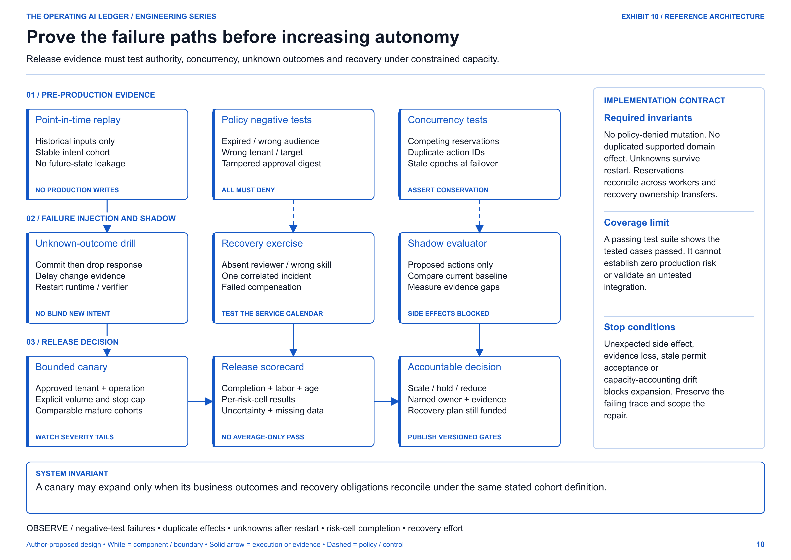
A practical rollout starts with one operation and a narrow tenant cohort. Replay point-in-time inputs without side effects. Run policy-denial and concurrency tests. Exercise the unknown-outcome path. Then use a bounded canary with explicit stop conditions and comparable, mature outcome cohorts.
Expansion should require an owner to answer four questions:
- Do all admitted actions reconcile into verified, controlled-noncompletion or unresolved outcomes?
- Can the actual recovery team absorb the next workload increment, including the severe and slow cases?
- Have the authorization, concurrency and lost-response failure paths been tested at their real enforcement boundaries?
- Can the organisation contain new exposure and resolve existing effects if the canary deteriorates?
The companion's 22 arithmetic tests validate the displayed calculations and selected mathematical boundary cases. They do not implement the ten architectures, test a live CRM or certify production safety. A deployment needs its own integration, security, failure-injection and recovery evidence.
The consequence for leadership is specific: authorize an increment of throughput against a named recovery pool, a defined outcome window, measurable stop conditions and funded ownership. Reassess that increment when the workload mix, authority scope or staffing changes.
Scale the work your organisation can finish, including the work it did not intend to create.
For the next workflow you would expand, which constraint binds first: exception arrivals, authorized reviewer hours, or the time needed to establish what actually happened?